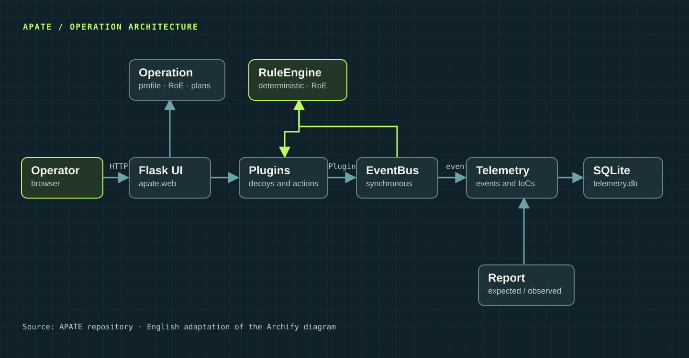

Design with context
Bring together the adversary profile, expected TTPs, rules of engagement, scenarios, and narrative before activating capabilities.
OPERATION CONTROL PLANE / CYBER DECEPTION
APATE connects an adversary hypothesis to decoys, response rules, and evidence. Design, execution, and observations stay linked to the same operation.
Open core · AGPL-3.0-or-later · Technical release candidate 0.1.0rc1
Profile · Rules of engagement · Scenarios · Narrative
01 / WHAT IT DOES
APATE organizes different techniques around an operational hypothesis and records decisions and outcomes.
Bring together the adversary profile, expected TTPs, rules of engagement, scenarios, and narrative before activating capabilities.
Connect network and host decoys, simulated identities, and honeytokens through plugins and confirmable plans.
Link telemetry, IoCs, and observed TTPs to the operation; compare the intended effect with the available evidence.
02 / WORKFLOW
A concise view of the workflow. Design suggestions require operator review; automated actions follow explicit rules and constraints.
Choose the adversary, expected TTPs, assets, and rules of engagement.
Link each technique to a deception intent, a narrative, and the plugins that implement it.
Events feed telemetry and deterministic rules; operation constraints limit resulting actions.
Compare expected and observed TTPs, IoCs, and measured effects; export the report for the next cycle.
03 / ARCHITECTURE
The EventBus delivers events to telemetry and the rule engine. The operation supplies context; plugins run capabilities, and the report closes the cycle.
Diagram of the current code, adapted from the Archify source.

04 / GET STARTED
From the APATE repository root, install the development environment and load the local seed. The example uses synthetic data.
Current status. Technical release candidate; external integrations and operator evaluation still have pending validation gates.
$ python -m venv .venv
$ python -m pip install -e ".[dev]"
$ python examples/seed_demo.py
$ python -m apate.webActivate the virtual environment before installing. Then open 127.0.0.1:5000/operations/.